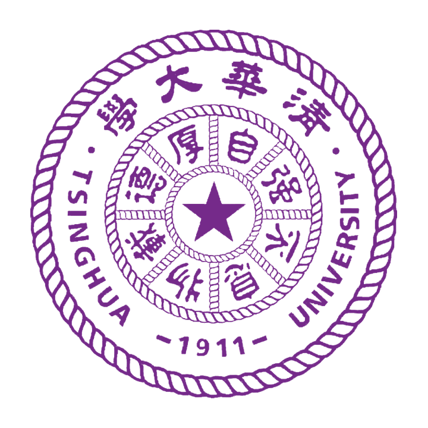
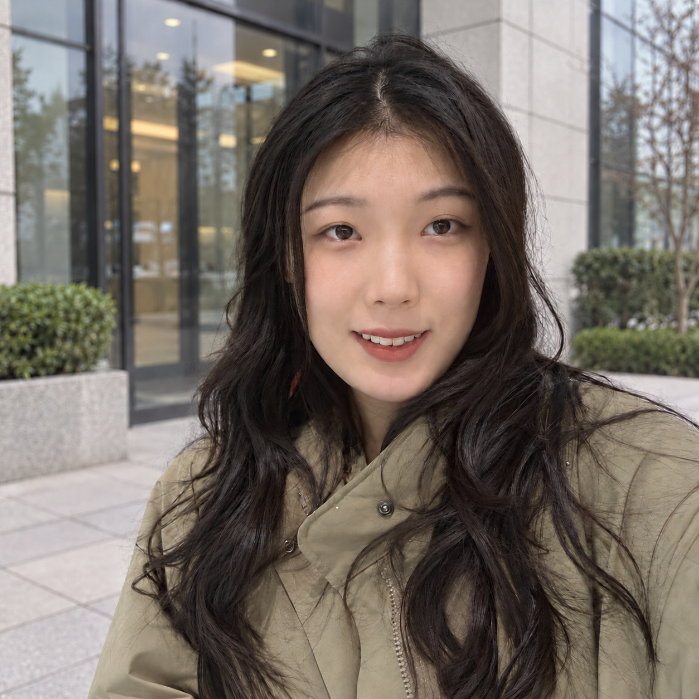
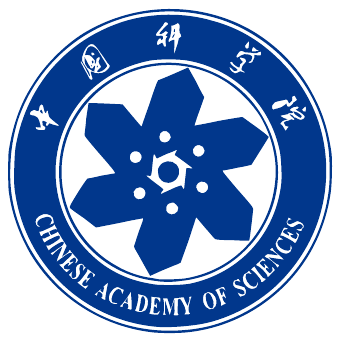
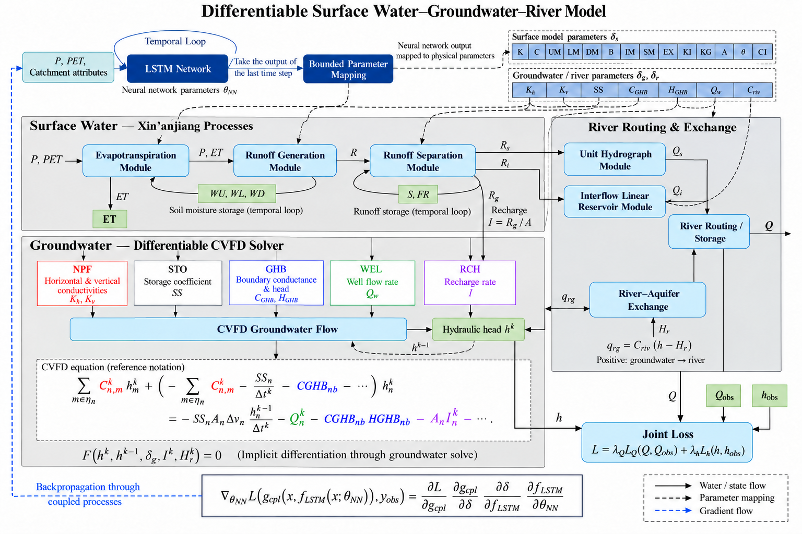
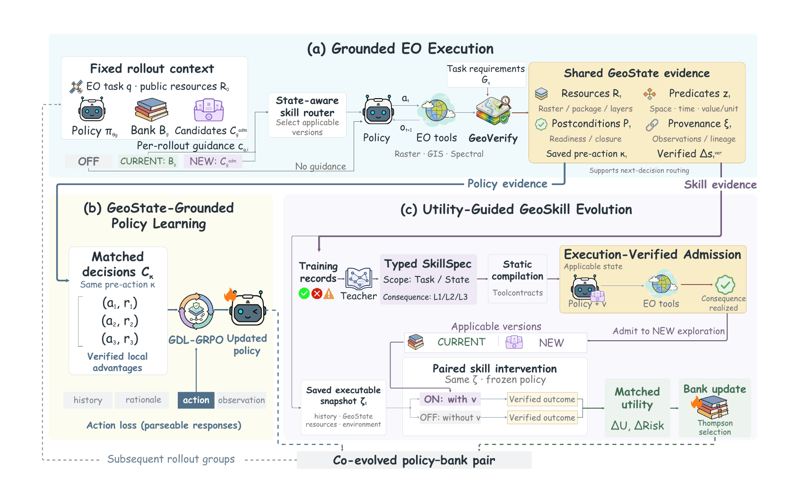
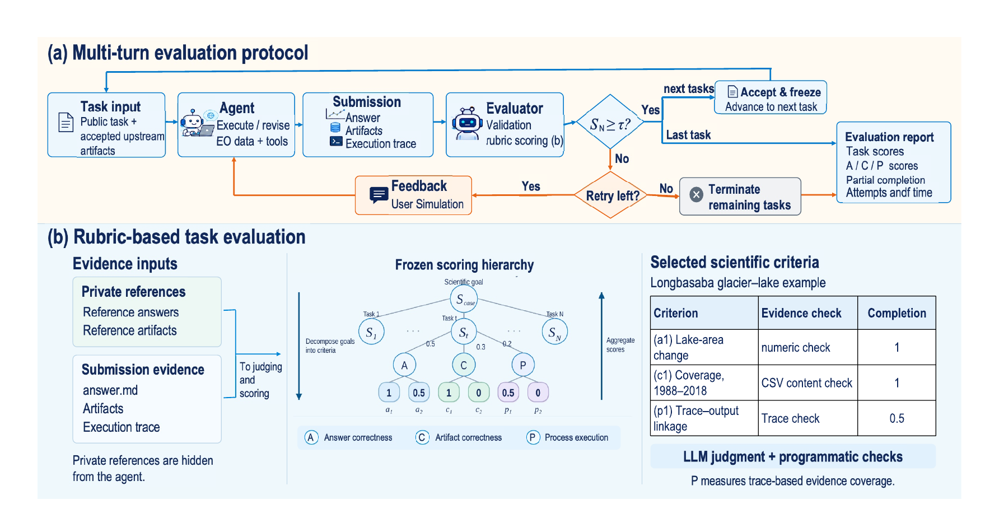
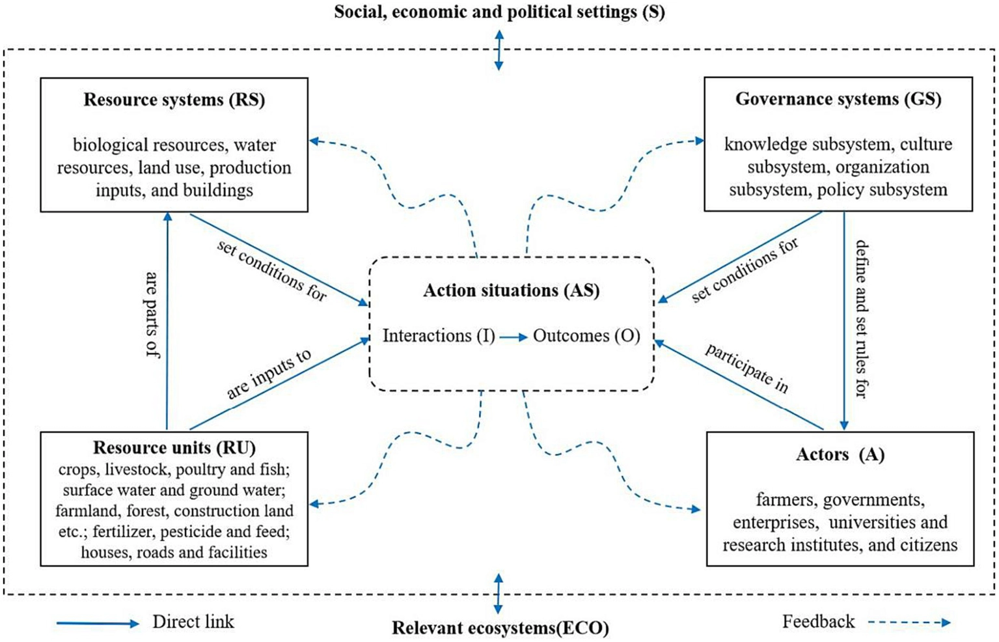
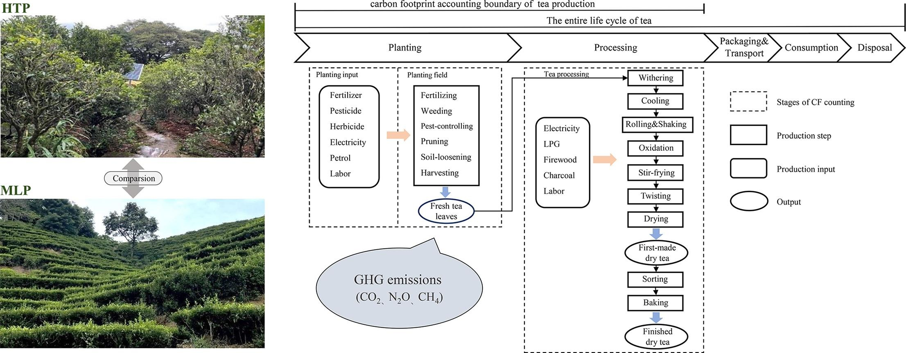

Apr. 2026
– Present2026.04
— 至今
– Present2026.04
— 至今

THUNLP & Qiyuan Lab
Remote sensing foundation models and learning agents, with emphasis on verified execution and reliable evaluation.研究遥感基础模型与学习型智能体，重点关注可验证执行与可靠评测。
Ph.D. Student in Hydrological Modeling UCAS水文建模方向博士研究生 中国科学院大学
Last updated: October 9, 2026更新日期：2026 年 10 月 9 日

I am a Ph.D. student at the University of Chinese Academy of Sciences (UCAS), conducting research in hydrological modeling at the Institute of Geographic Sciences and Natural Resources Research, Chinese Academy of Sciences. Since April 2026, I have collaborated with THUNLP & Qiyuan Lab on Earth observation agents.我是中国科学院大学（UCAS）博士研究生，在中国科学院地理科学与资源研究所开展水文建模研究。自 2026 年 4 月起，我与 THUNLP 及 Qiyuan Lab 合作，研究地球观测智能体。
My research combines physical process modeling and trustworthy AI for visual understanding and Earth observation. I focus on developing hydrological digital twins and improving the ability of Earth observation agents to tackle long-horizon, real-world geoscientific problems.我的研究结合物理过程建模与面向视觉理解和地球观测的可信人工智能，重点构建水文数字孪生模型，并提升地球观测智能体处理长程、真实地学问题的能力。
I am seeking research internship opportunities for spring 2027. Please contact me at:我正在寻找2027 年春季的研究实习机会，欢迎通过以下方式联系我：

Remote sensing foundation models and learning agents, with emphasis on verified execution and reliable evaluation.研究遥感基础模型与学习型智能体，重点关注可验证执行与可靠评测。

Physics-guided hydrological modeling, climate–agriculture time series, and social–ecological resilience.物理约束水文建模、气候—农业时序分析与社会—生态系统韧性研究。

Research architecture研究架构图Developing a hydrological digital twin that combines PyTorch-based neural parameterization with coupled surface-water and groundwater processes. Align heterogeneous forcing, irrigation, and observation data to a 1 km grid; calibrate model parameters against well observations; and examine water-balance consistency and long-term state evolution. Use fixed-parameter scenario experiments to diagnose how water use changes model behavior, with scientific agents supporting simulation and multi-objective decision workflows.构建结合 PyTorch 神经网络参数化与地表水—地下水耦合过程的水文数字孪生。将异构气象驱动、灌溉与观测数据对齐至 1 km 网格，利用地下水井观测校准参数，检查水量平衡一致性与长期状态演化。通过固定参数的情景实验分析用水变化对模拟结果的影响，并探索科学智能体驱动的模拟与多目标决策流程。

An Earth observation agent framework that improves policies and reusable skills together. Verified execution states support credit assignment and skill evaluation, connecting learning to what the agent actually accomplished.面向地球观测智能体的策略与技能协同进化框架。通过可验证的执行状态支撑信用分配与技能效用评估，让学习过程与智能体实际完成的任务相联系。

A benchmark of 30 paper-grounded Earth observation cases and 101 connected tasks. Reproduced reference results and structured rubrics evaluate final answers, generated artifacts, and the evidence left by scientific execution.包含 30 个基于真实论文的地球观测案例与 101 个关联任务。通过复现参考结果与结构化评分标准，从最终答案、生成产物和科学执行证据三个层面评测智能体。

Wenjun Jiao, Zhounan Yu, Siyuan He · Frontiers in Sustainable Food Systems, 2024
Developed a social–ecological systems framework to study policy-driven adaptation in the Qingtian rice–fish system. Used ecosystem-service trade-offs and carbon footprint per unit output value to assess resilience. This work informs my understanding of environmental pressures, adaptation, and the consequences of model-based decisions.围绕青田稻鱼共生系统，构建社会—生态系统分析框架，研究政策驱动的适应过程；通过生态系统服务权衡与单位产值碳足迹评估韧性，为理解环境压力、适应行为与模型决策的实际影响提供基础。
Paper · DOI论文 · DOI
Zhounan Yu, Wenjun Jiao, Qingwen Min · Ecological Indicators 158, 111305 · 2024
Quantified production-related emissions and examined fertilizer, energy, and management drivers, linking environmental assessment to practical mitigation choices.量化生产过程的碳排放，分析施肥、能源投入与管理措施的影响，将环境评估与实际减排选择相联系。
Paper · DOI论文 · DOIPython, NumPy, pandas and rasterio; geospatial reprojection, grid alignment, temporal aggregation, unit consistency, and climate–observation integration.Python、NumPy、pandas、rasterio；空间重投影、网格对齐、时间聚合、量纲检查及气象驱动与观测数据融合。
PyTorch training and physical parameter learning; staged calibration, chronological state carry, observation-based error analysis, and controlled scenario comparisons.PyTorch 训练与物理参数学习；分阶段校准、时间连续状态传递、观测误差分析与受控情景对比。
RMSE, MAE and bias diagnostics; conservation checks, gradient inspection, input provenance, frozen checkpoints, and traceable execution artifacts.RMSE、MAE 与偏差诊断；守恒检查、梯度分析、输入溯源、检查点固化与可追踪执行产物。
Scientific-tool orchestration, reusable skills and rubric-based evaluation; multi-objective optimization for water–food–environment decisions.科学工具调用、可复用技能与结构化评分；面向水—粮—环境决策的多目标优化。
Ecology · Integrated master’s–doctoral program
GPA: 3.87/4 · Director’s Scholarship; Institute Merit Student生态学 · 硕博连读
GPA：3.87/4 · 所长奖学金、所三好学生
Tourism Geography · Undergraduate
GPA: 93.53/100 · National Scholarship; Outstanding Graduate; Outstanding Undergraduate Thesis旅游地理 · 本科
GPA：93.53/100 · 国家奖学金、优秀毕业生、优秀毕业论文